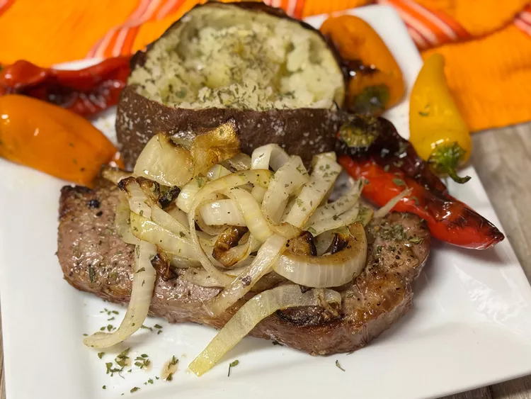

Air Fryer Sauteed Onions

Description
Air fryer sauteed onions add a lot to burgers, sandwiches, tacos, fajitas, or even rice or mashed potatoes. I like them as a topping for steaks—the possibilities are endless.
Ingredients
- 1 large onion, peeled and sliced into petals
- 1 1/2 teaspoons olive oil
- salt and freshly ground black pepper
Steps
- Preheat an air fryer to 400 degrees F (200 degrees C).
- Place onion petals and olive oil in a bowl; season with salt and pepper and toss to coat.
- Pour mixture into the basket of the air fryer. Cook 10 minutes. Shake the basket and cook 2 minutes more.
Home